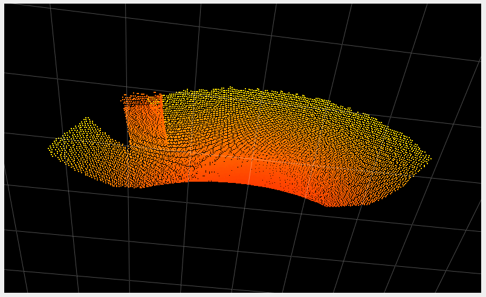

Acquisition parameters
Note
The min, max and default values of each parameter are defined in the JSON schema.
To print out the schema, you can use the ifm3d CLI:
ifm3d jsonschema
Check out the Python and C++ examples on how to retrieve the JSON schema.
Framerate
Variable name |
Short description |
|---|---|
|
Defines the number of frames captured each second |
For the O3R system the FPS is independent from the applied imager settings (exposure mode and times, filters, etc.). Higher exposure times, for example, will not negatively impact the system’s FPS. The O3R is designed to achieve 20 FPS in the 2 m and 4 m modes, regardless of applied settings.
Exposure Times
Variable name |
Short description |
|---|---|
|
These parameters are used to set the exposure times. |
Exposure times are utilized to maximize the number of valid pixels in a scene. The use of multiple exposures (HDR) permits the camera to operate in “dynamic” environments that require the detection of dark and light objects at both the minimum and maximum ranges.
The proper exposure time for a pixel depends on factors such as the dynamics of the scene and whether the target is moving or stationary. For highly reflective targets or for motion, a short exposure time is best. For targets far away or with low surface reflectance choosing high exposure time is preferable.
As such, it is common that all targets of a scene cannot be properly exposed with a single exposure time.
To reduce noise and the number of overexposed/underexposed pixels, we use three exposures for each frame. The standard modes provides two settable exposure times (expLong and expShort) plus a third constant exposure (set at 30 µs) designed to help detect highly reflective targets in the very near range (~1 m). Note that using a small ratio of exposure times helps reduce noise in transitions regions (where neighboring pixels use different exposure times).
Note
You can find which exposure time is used for each pixel by analyzing the confidence image as detailed here.
Delay
Variable name |
Short description |
|---|---|
|
The delay defines the minimum time delay between the framerate loop start and the actual imager trigger. |
The Delay parameter is not valid in IDLE state of the port and when Delay parameter is configured in IDLE state then the value is set back to its default(0). Please refer to this section for more details.
Software Trigger Group
Overview
Variable name |
Short description |
|---|---|
|
This parameter is used in IDLE state only and ports having same |
The swTriggerGroup parameter allows you to assign a port to a commmon trigger group. All ports with the same swTriggerGroup value are considered to be part of this group. When any port within this group is software triggered, all other ports in the same group will also be triggered simultaneously.
Note
If the swTriggerGroup is zero (default) then no other ports will be triggered except the one which is triggered.
To perform a software trigger one can use ifm3d API function
Example
For illustrative purposes, let’s consider an example:
Four camera heads are connected to the VPU and the
swTriggerGroupvalue for the respective ports are as follows.
PORT |
|
State |
|---|---|---|
0 |
0 |
IDLE |
1 |
2 |
IDLE |
2 |
0 |
IDLE |
3 |
2 |
IDLE |
In this scenario, PORT1 and PORT3 are part of the same synchronization group (group 2), while PORT0, PORT2 belongs to default synchronization group. Software triggering PORT1 or PORT3 will trigger both ports simultaneously, ensuring coordinated actions between them. PORT0, PORT2 with a different swTriggerGroup, operates independently of the other two ports.
Offset
Overview
Variable name |
Short description |
|---|---|
|
Shifts the start and end point of the measurement range (see mode) |
Coded modulation dictates the measurement range of the camera (for example 0 to 2 m). Coded modulation also allows this measurement range to be offset or shifted from its start point. In the example of 0 to 2 m measurement range, an offset of 0.5 m would lead to around 0.5 to 2.5 m of range. Continuing this example, an offset of 1 leads to around 1 to 3 m of range. The offset can be changed frame by frame.
Using the offset can allow you to collect distance measurements past the measurement range set by the mode while taking advantage of the robust point cloud the O3R provides and the particularities of each mode.
The offset can be set to negative values, which brings the end of the measurement range closer to the camera. This can be useful to reduce MPI artifacts, for example, or to avoid artifacts caused by highly reflective objects (see the stray light artifacts documentation) by removing the source of the artifact from the measurement range.
While the offset is set in meters, the underlying physics engine dictates that each offset step represents a slightly different distance. The size of each step varies mainly with the temperature, the exposure time, the channel value and more.
An estimate of each offset step is as follow:
Offset |
Estimated real range for the |
Estimated real range for the |
|---|---|---|
-2 |
N/A |
0.0m - 1.92m |
-1 |
0m - 1.00m |
0.0m - 3.07m |
-0.5 |
0m - 1.58m |
N/A |
0 |
0.0m - 2.17m |
0.0m - 4.20m |
0.5 |
0.33m - 2.75m |
N/A |
1 |
0.97m - 3.39m |
0.55m - 5.34m |
1.5 |
1.79m - 4.08m |
N/A |
2 |
2.38m - 4.67m |
1.7m - 6.49m |
2.5 |
2.95m - 5.24m |
N/A |
3 |
3.64m - 5.83m |
4.0m - 8.0m |
4 |
4.80m - 6.99m |
5.15m - 9.15m |
To verify the measurement range in real time, one can use the ifm3d API: the TOF_INFO buffer contains real time information for min and max range, as well as other details of the current setup.
Follow the Python or C++ examples on how to retrieve this information in the ifm3d-examples repository.
Example
Let’s look at the following scene. Three boxes are positioned in front of the camera at about one, two, and three meters away.

We are using the 2m mode, with all the other settings as default. The table below shows the point cloud for multiple values of the offset.
Offset (meters) |
Point Cloud |
|---|---|
-0.5 |
 |
0 |
|
1.5 |
|
2.5 |
|


Note
In the last image, where the offset is set to 2.5 m, we can see that the noise is higher than in the other images. This is due to the larger absolute distance from the object to the camera, with which the noise increases. Additionally one should know that the most robust measurement is in the middle of the measurement range, which is about 3 to 4 m in the case of the last example. The ground in front of the box is outside the measurement range.
Channel selection and channel value
Variable name |
Short description |
|---|---|
|
Defines the user mode for handling channel selection: currently only manual |
|
Defines the channel value |
This concept for cross talk mitigation is based on channels, each channel corresponding to a different modulation frequency. Use a channel combination of mutually exclusive channels to almost completely reduce the possibility and effect of cross talk between O3R camera heads. The channel value has to be set per 3D TOF imager / O3R camera head. By default it is to value 0.
A channel value difference of 2 has been shown to be adequate. Any additional channel value offset (> 2) will not improve crosstalk mitigation between O3R camera heads. Use intermediate, that is odd channel numbers if larger numbers of channels are required: We suggest to geometrically separate cameras with channel differences 1 - for example forward and backward facing cameras on an AGV / AMR.
As of firmware version 1.0.14 the channel value has to be manually set to a distinct value. We suggest to couple the channel value selection to a (randomized) channel value based your AGVs / AMRs serial number:
O3R VPU ETH0 MAC IDs can be used but a “customer-serial number” or even “customer-site-specific-serial-number” is preferred. This is because these numbers are in better control by the customer than a MAC address. So finding a systematic way to map from an (arbitrary increasing) MAC-addresses to (linearly increasing) channels is difficult. Ideally there is a “customer-site-specific-serial-number” that more or less counts the vehicles in one location, i. e. a simple mod(number,200) would do the trick.